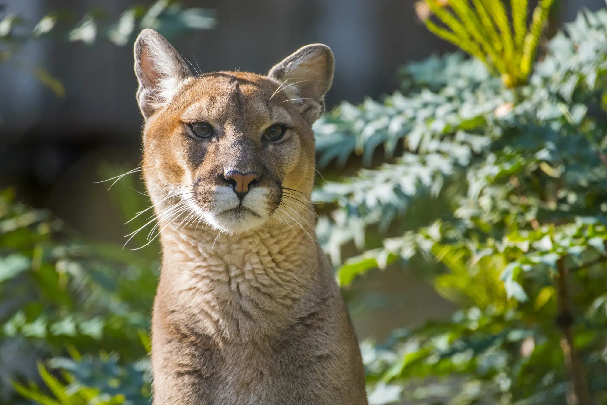

The puma is a large, secretive cat. They are also commonly known as cougars and mountain lions, and are able to reach larger sizes than some other "big" cat individuals. Despite their large size, they are thought to be more closely related to smaller feline species.